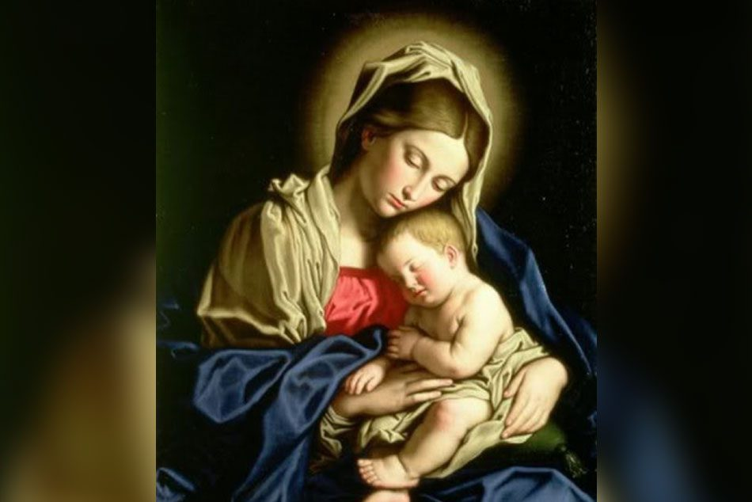
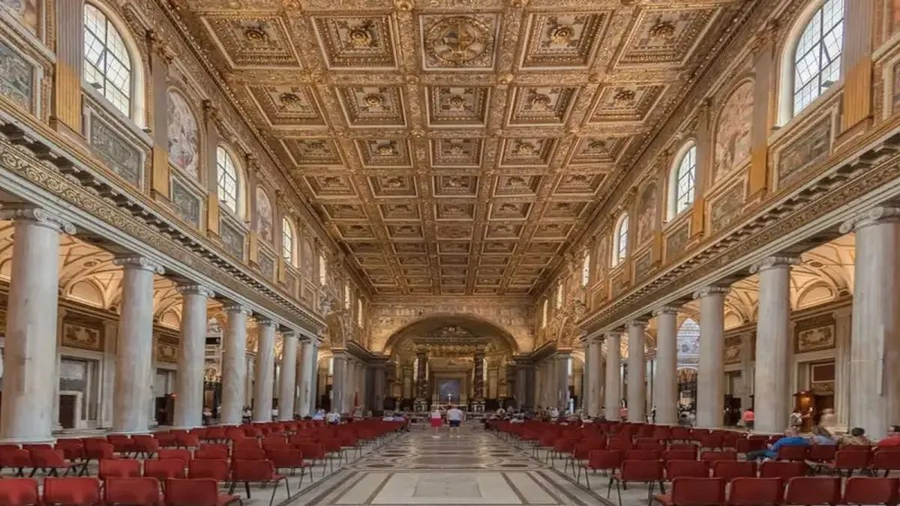

La Solemnidad del 1 de Enero: Octava de Navidad y Año Nuevo Mariano
Comenzar el año civil con la Solemnidad de la Madre de Dios es, en el calendario litúrgico romano reformado, mucho más que una coincidencia de fechas. Es una declaración de intenciones: el año cristiano arranca bajo el signo de María, la mujer que, al acoger en su seno al Verbo Eterno, cambió para siempre el rumbo de la historia humana. El 1 de enero es, además, el octavo día después de la Navidad —la llamada "Octava de Navidad"— y en la tradición judía que nutre la liturgia cristiana, el octavo día era el del nombre: el día en que el niño recibía oficialmente su identidad. El Evangelio del día (Lucas 2,21) narra precisamente la circuncisión y la imposición del nombre de Jesús.
La historia de esta fecha en el calendario mariano es instructiva. El 1 de enero no siempre fue una fiesta de la Virgen en Occidente. En el calendario romano preconciliar, era la fiesta de la Circuncisión del Señor. La reforma del calendario litúrgico impulsada por el Concilio Vaticano II y promulgada por Pablo VI en 1969 recuperó una tradición más antigua: la Iglesia de Roma había celebrado el 1 de enero como fiesta mariana desde los siglos VII y VIII, dedicando la Basílica de Santa María la Mayor a una celebración solemne en honor de la Madre de Dios al inicio del año. La reforma postconciliar restituyó este carácter mariano originario, vinculándolo con el título más fundamental que la fe cristiana le atribuye a María: su maternidad divina.
Pablo VI añadió a esta jornada una dimensión profética al instituir en 1968 la Jornada Mundial de la Paz, que se celebra cada 1 de enero desde 1968. La elección no fue casual: confiar a la intercesión de la Madre de Dios la causa de la paz en el mundo al inicio de cada año es una declaración teológica sobre quién puede, en última instancia, obtener del Hijo los bienes que el mundo más necesita. El Papa envía cada año un mensaje al mundo entero en esta fecha, articulando los grandes temas de la justicia y la fraternidad desde la perspectiva del Evangelio.
(Palabras de Isabel a María durante la Visitación — el primer reconocimiento bíblico del título de Madre del Señor)
El Título Theotókos y la Controversia Nestoriana
La palabra griega Theotókos —que puede traducirse como "la que ha dado a luz a Dios" o "Madre de Dios"— tiene una historia que combina devoción popular, disputa teológica y definición conciliar de una manera que no tiene parangón en la historia del dogma cristiano. Su resolución en el año 431 en Éfeso no solo definió la naturaleza de María, sino que protegió para siempre la identidad de Cristo.
El título Theotókos no fue inventado por el Concilio de Éfeso: lo utilizaban ya los fieles de Alejandría al menos desde el siglo III. El teólogo Orígenes (c. 185–254) es el primer autor conocido que lo emplea. San Atanasio de Alejandría, campeón de la ortodoxia nicena frente al arrianismo, lo usó con toda naturalidad. Era, en otras palabras, una expresión de la piedad cotidiana de los creyentes antes de convertirse en una fórmula dogmática.
La crisis estalló cuando Nestorio, un monje sirio de formación antioquena, fue nombrado Patriarca de Constantinopla en el año 428. Nestorio era un predicador brillante y un reformador moral severo, pero su cristología —marcada por la escuela teológica de Antioquía, que enfatizaba la humanidad histórica y concreta de Jesús— lo llevó a un error de consecuencias devastadoras. Nestorio rechazó el término Theotókos argumentando que María no podía ser "Madre de Dios" porque nadie puede engendrar a Dios, que es eterno. Propuso sustituir Theotókos por Christotókos, "Madre de Cristo", e incluso Anthropotókos, "Madre del hombre." En su visión, en Jesús había dos personas distintas —una divina y una humana— unidas de forma moral pero no sustancial.
La reacción fue inmediata y furiosa. San Cirilo de Alejandría, uno de los más grandes teólogos de la historia de la Iglesia aunque también un polemista implacable, comprendió de inmediato que el error de Nestorio no era solo mariológico: era cristológico en su raíz. Si en Cristo hay dos personas, entonces quien murió en la Cruz fue solo el hombre Jesús, no Dios; la Redención queda vaciada de su fuerza salvadora. Cirilo escribió al propio Nestorio, al Papa Celestino I —quien condenó a Nestorio en un sínodo romano— y a todo el mundo eclesiástico. Sus Doce Anatematismos contra las posiciones nestorianas son un monumento de precisión teológica.
El Concilio de Éfeso, convocado por el emperador Teodosio II para el 7 de junio de 431, fue uno de los eventos más dramáticos de la historia de la Iglesia. Cirilo llegó con sus obispos y abrió el concilio antes de que llegaran los representantes de Nestorio y sus aliados sirios. Tras una sesión maratoniana que comenzó al amanecer y terminó de madrugada, el concilio leyó las cartas de Cirilo y las condenaciones del Papa Celestino, examinó las posiciones de Nestorio, y proclamó por unanimidad la deposición de Nestorio y la plena validez del título Theotókos. La reacción popular en las calles de Éfeso —una ciudad profundamente vinculada a la devoción a María desde los tiempos apostólicos— fue de euforia desbordante: los habitantes iluminaron sus ventanas con antorchas, acompañaron en procesión a los obispos gritando "¡Theotókos! ¡Theotókos!", y la ciudad entera se llenó de cantos de alegría. Fue uno de los momentos más emotivos de toda la historia de los concilios.
Significado Teológico: Un Dogma sobre Cristo más que sobre María
Existe una paradoja fascinante en el corazón de este dogma: la definición más fundamental sobre María es, en su intención primaria, una definición sobre Cristo. El Concilio de Éfeso no se reunió para tratar de la grandeza de María, sino para salvaguardar la identidad del Hijo de Dios. La maternidad divina de María es la consecuencia necesaria de la unidad de la persona de Cristo.
El principio teológico central es la llamada communicatio idiomatum —"comunicación de propiedades"—: puesto que en Jesucristo hay una sola persona —la segunda Persona de la Santísima Trinidad, el Verbo Eterno— aunque con dos naturalezas completas (la divina y la humana), todo lo que se predica de la naturaleza humana puede predicarse de la Persona divina, y viceversa. Por tanto, es correcto decir que "Dios nació de María", "Dios sufrió", "Dios murió en la Cruz" —no porque la divinidad sea susceptible de nacimiento, sufrimiento o muerte, sino porque el que nació, sufrió y murió fue una Persona divina que asumió la naturaleza humana con todas sus contingencias.
Lo que María engendró no fue solo una naturaleza humana vacía que luego fue "habitada" por Dios como en un templo, sino una Persona divina en su humanidad concreta. Ningún ser humano engendra naturalezas; los seres humanos engendran personas. La persona que María engendró es el Verbo Eterno, el Hijo de Dios. Luego María es verdaderamente Madre de Dios, aunque su maternidad alcance a la Persona del Hijo solo en cuanto a su naturaleza humana —que es precisamente lo único que una madre puede comunicar a su hijo.
Las consecuencias mariológicas de este principio cristológico son profundas. Si María es Theotókos, entonces ningún título de honor que la fe le rinda es exagerado: es la criatura más excelente del universo, porque ninguna otra ha estado en relación tan inmediata y constitutiva con el misterio de Dios. Al mismo tiempo, ese honor no rivaliza con la adoración debida a Dios: el honor de María es puro reflejo, criatura toda ella de la gracia divina, "llena de gracia" no por méritos propios sino por el don inmerecido del Espíritu Santo. La veneración —hyperdulía— que la tradición católica tributa a María se distingue esencialmente de la adoración —latría— debida solo a Dios, precisamente porque María no es Dios sino la criatura que Dios eligió para hacerse hombre.
María Madre de Dios en la Sagrada Escritura

El título Theotókos no aparece como tal en los textos del Nuevo Testamento —el término griego es una formulación teológica posterior— pero sus fundamentos escriturísticos son sólidos y reconocidos por la exégesis crítica más rigurosa. Tres pasajes resultan particularmente iluminadores.
El primero y más directo es Lucas 1,43, la exclamación de Isabel durante la Visitación: "¿A quién debo yo que la madre de mi Señor venga a visitarme?" La expresión griega he meter tou Kyriou mou —"la madre de mi Señor"— utiliza el término Kyrios, que en la versión griega del Antiguo Testamento (la Septuaginta) es la palabra empleada para traducir el Nombre divino de YHWH. Isabel no llama a María "madre del Cristo" o "madre del Mesías", sino "madre del Señor", reconociendo en el niño que ella lleva en su seno a Aquel ante quien toda rodilla se dobla. Si Kyrios designa al Señor divino, entonces meter tou Kyriou es ya, implícitamente, el equivalente hebreo de Theotókos.
El segundo pasaje fundamental es Gálatas 4,4: "Pero al llegar la plenitud de los tiempos, envió Dios a su Hijo, nacido de mujer, nacido bajo la ley." Pablo no nombra a María, pero la expresión "nacido de mujer" (griego: genomenon ek gynaikos) afirma la verdadera encarnación del Hijo de Dios en la humanidad concreta de un ser nacido de una madre humana. El mismo que en la frase anterior es el "Hijo de Dios" enviado por el Padre, es en la siguiente el que "nació de mujer": la maternidad de esa mujer alcanza, pues, a la Persona del Hijo eterno.
El prólogo del Evangelio de Juan (1,14) ofrece el fundamento cristológico más profundo: "Y el Verbo se hizo carne y habitó entre nosotros." El Verbo, que "en el principio era con Dios y era Dios" (Jn 1,1), "se hizo carne" —no simplemente entró en un cuerpo ya existente, sino que asumió la condición humana desde su inicio, desde la concepción. Ese Verbo hecho carne lo fue en el seno de María: luego María es la Madre del Verbo encarnado, es decir, la Madre de Dios.
El Evangelio de la Infancia de Lucas (capítulos 1–2) ofrece además una constelación de textos que la tradición ha leído siempre como indicios de la grandeza única de María: el saludo del ángel que la llama kecharitomene (1,28), la habitación del Espíritu Santo sobre ella (1,35), el reconocimiento de Isabel (1,43), el canto del Magnificat (1,46–55) en que María profetiza que "todas las generaciones me llamarán bienaventurada." Esa profecía del Magnificat se ha cumplido puntualmente a lo largo de veinte siglos: en ninguna otra figura humana se ha concentrado tanta devoción, tanto arte, tanta teología y tanta esperanza de la humanidad creyente.
Devoción y Celebración: Madre de Dios en la Vida de la Iglesia

La Solemnidad del 1 de enero es, en el calendario romano, una de las fiestas más antiguas y de mayor rango litúrgico. Como Solemnidad, tiene el mismo rango que la Navidad, la Pascua o Pentecostés: la Iglesia la celebra con las tres lecturas propias, el Gloria, el Credo y la plena solemnidad litúrgica. Es, al mismo tiempo, Día de Precepto —los fieles están obligados a participar en la Eucaristía— salvo donde la Conferencia Episcopal haya dispensado de esta obligación.
El carácter mariano del 1 de enero ha encontrado expresión en una rica tradición de peregrinaciones y celebraciones en todo el mundo católico. La Basílica de Santa María la Mayor en Roma, dedicada especialmente a la Theotókos desde el siglo V, es el corazón litúrgico de esta fiesta: la imagen de la Salus Populi Romani, venerada en ella desde el siglo VI, recibe las oraciones de miles de peregrinos en los primeros días del año. En Hispanoamérica, numerosas imágenes de la Virgen bajo el título de Madre de Dios son objeto de ferviente devoción popular en las fiestas del Año Nuevo.
La advocación de "Madre de Dios" trasciende los límites del catolicismo. Las Iglesias Ortodoxas de tradición griega, eslava, rumana y árabe rinden a la Theotókos una veneración que en muchos aspectos supera en intensidad devocional a la práctica occidental: los akathistos, los paraclises, los oficios de la Theotókos llenan el año litúrgico oriental de himnos marianos cuya belleza y profundidad teológica no tienen parangón en la literatura cristiana. Los anglicanos que se mantienen en la tradición patrística también reconocen el título de Theotókos como norma de ortodoxia cristológica.
Para el creyente de hoy, confesar que María es Madre de Dios es la afirmación más radical que puede hacerse sobre la dignidad del ser humano: Dios quiso tener una madre. Quiso depender de una criatura para venir al mundo, para ser alimentado, educado, amado. La Encarnación no fue una visita divina distante y aséptica, sino una inmersión total en la condición humana, y esa inmersión comenzó en el seno de una mujer de Nazaret. En María, Madre de Dios, se revela que lo humano es capaz de contener lo divino, que la carne puede ser morada del Eterno, y que ningún ser humano está demasiado lejos de Dios para ser visitado por su gracia.